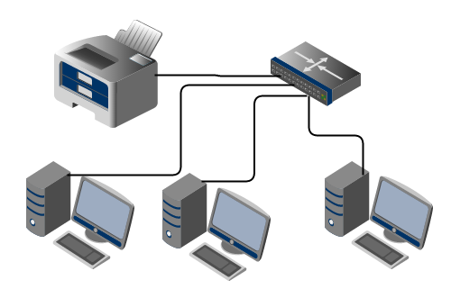

Son recursos creados por defecto en la red en todos los sistemas basados en la Tecnología Windows.
Estos recursos por defecto comparten cada unidad de disco en el sistema. Esto permite a que cualquiera que se pueda identificar como miembro del grupo de Administradores locales, accedan al directorio raíz de cada unidad de disco en el sistema. La principal ventaja de trabajar en red es que se pueden economizar recursos, ya que en varios ordenadores pueden compartir una impresora o bien pueden intercambiar datos entre ellos. Los recursos compartidos aparecen con una mano bajo el icono que los representa.
Un recurso compartido es cuando hacemos que una carpeta sea accesible desde la red y para múltiples usuarios simultáneamente. Después de que una carpeta se comparte, los usuarios podrán acceder a todos los archivos y subcarpetas que contiene, si estos tienen los permisos adecuados. Podemos tener los recursos compartidos en un servidor de archivos o en cualquier máquina de la red. Almacenar los archivos según categoría o función.
La red de área local permite compartir bases de datos, programas y periféricos como pueden ser un módem, una impresora, etc.
Nos permite realizar un proceso distribuido, es decir, las tareas se pueden repartir en distintos nodos y nos permite la integración de los procesos y datos de cada uno de los usuarios en un sistema de trabajo corporativo. Tener la posibilidad de centralizar información o procedimientos facilita la administración y la gestión de los equipos. Ademas una red de área local conlleva un importante ahorro, tanto de dinero, ya que no es preciso comprar muchos periféricos, se consume menos papel, y en una conexión a Internet se puede utilizar una única conexión telefónica compartida por varios ordenadores conectados en red; como de tiempo, ya que se logra gestión de la información y el trabajo.
• Aparece en Windows Explorercomo un icono de una mano ofreciendo una carpeta
• Sólo podemos compartir carpetas, no archivos individualmente. Si varios usuarios han de acceder al mismo archivo, se coloca en una carpeta y se comparte la misma.
• Cuando compartimos una carpeta, el permiso de lectura se asigna al grupo ‘Todos’ como un permiso predefinido. Quitar el predefinido y asignar otros permisos a los grupos deseados es necesario.
• Si añadimos usuarios o grupos a una carpeta compartida, el permiso predefinido es de lectura.
• Cuando copiamos una carpeta compartida, la original continua compartida pero no así la copia. Si movemos la carpeta a otra situación, perderá el atributo de compartida.
• Podemos ocultar un recurso compartido colocando el signo dollar ‘$’ al final del nombre de recurso. Este no será visible desde la interfaz gráfica, pero es accesible utilizando el nombre UNC, por ejemplo: \\servidor\recurso$.